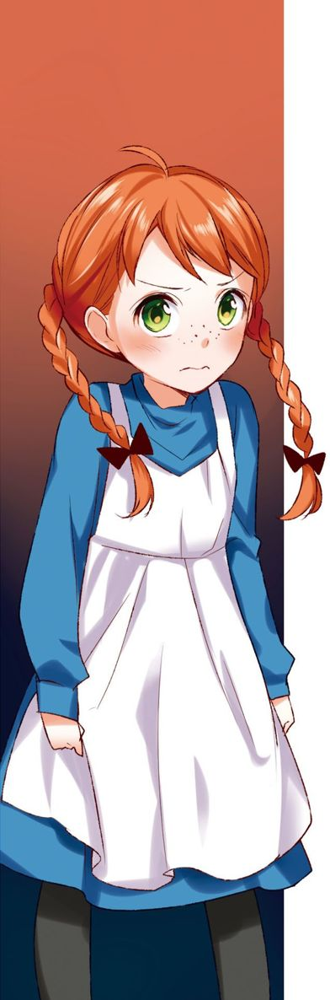

| １０歳までに読みたい世界名作1 赤毛のアン | |
| ルーシー・Ｍ・モンゴメリ | |
| (2014) | |
１ リンド夫人のおどろき
レイチェル・リンド夫人の家は、ちょうどアボンリー村の出入り口にたっていました。
六月のはじめの、さわやかな午後のことでした。
「おや？」
リンド夫人は、マシュウ・クスバートが、とっておきの外出着で馬車に乗り、おかを上っていくのを、見つけました。
マシュウは、もう六十歳ぐらいで、リンド夫人の家より、ずっとおくまったところの、『グリーン・ゲイブルス』（緑の切り妻屋根）（＊）とよばれる家に、妹のマリラと二人で住んでいます。
（まあ、めずらしいねえ、内気なマシュウが出かけるなんて......それに、あんなにめかしこんで、いったいどこへ行くんだろう？）
と、頭をかしげながら、つぶやきました。
そこで、リンド夫人はお茶をすますと、さっそく『グリーン・ゲイブルス』へ出かけていきました。
あみものをしていたマリラは、リンド夫人をむかえると、
「いらっしゃい、レイチェル。まあ、おかけなさいよ。」
と、親しげにいいました。
「こんにちは、マリラ。あなたが病気にでもなったのかと、心配してやってきたのよ。マシュウがお医者さんをよびに行ったのかと思ってね。」
と、リンド夫人がいうと、マリラの口がおかしそうにゆがみました。きっとあれこれ、ききだしに来るだろうと思っていたからです。
「いいえ、わたしは元気よ。マシュウは駅へ行ったのよ。孤児院（＊）から、小さな男の子を一人もらおうと思ってね。その子が、夕方の汽車で着くんですよ。」
これを聞いたリンド夫人の、びっくりした顔といったら。
「ずっと前から考えていたんですよ。マシュウも年をとってきましたしね......。子どもを引きとって、畑仕事を手つだってもらおうと思ってね。スペンサーのおくさんに、十一歳ぐらいの、りこうな男の子をつれてきてくださいって、おねがいしたんですよ。」
「あんたたち、なんてばかげたことをしたんだろうね。なんだって、わたしに、前もって相談してくれなかったの。知らない男の子を引きとるなんて、考えなしですよ。」
マリラは、聞きながらも、せっせとあみものをつづけています。
リンド夫人は、それでも、次々とマリラが考えなおすようにまくしたてて、やっと帰っていきました。
＊切り妻屋根...本を開いてふせたような形の屋根。
＊孤児院......両親をなくした子どもを育てるしせつの古いよび名。
２ 見知らぬ女の子
くり毛（＊）の馬が引く馬車は、マシュウを乗せて、林をぬけ、農場の間を走り、あまい花のかおりのする果樹園のそばを、軽々と進んでいきます。
やがて、駅に着きました。
「五時半の汽車は、まもなくですかね？」
マシュウが、駅長に、おずおずとたずねると、
「その汽車なら、もう三十分も前に行ってしまいましたよ。」
駅長は、そういって、ふと、相手がマシュウだと気づくと、こうつけくわえました。
「おお、マシュウさん。あんたのところへお客が来てますよ。小さな女の子のお客がね。待合室に入りなさいといったんですけどね。なんでも、外のほうが広々としていて、空想をめぐらすのにいいそうですよ。ちょっとかわった子らしいね。」
マシュウはめんくらって、いつもよりいっそう口ごもり、
「わしがむかえに来たのは、男の子なんですが......。」
というと、駅長は、ひゅうと口ぶえを鳴らしていいました。
「何か手ちがいがあったんでしょうな。スペンサーのおくさんは、マシュウさんがこの子をむかえに来るからと、わたしにたのんでいきましたよ。」
「おお......。」
あわれなマシュウは、ひくいうめき声を上げ、そっと、女の子のほうをながめました。その女の子は、年は十一歳くらい。やせっぽちで小さな白い顔は、そばかすだらけです。
着ている服は、はい色のもめんで作られたそまつなもので、そのうえ、ひどく短くて、きゅうくつそうでした。こい赤毛を、二つに分けたお下げにして、せなかにたらしていました。
マシュウが近づいていくと、女の子はうれしそうに、古ぼけたかばんを持って、立ちあがり、もう一方の手をマシュウにさしだして、
「あの、マシュウ・クスバートさんですか？」
と、いいました。それは、とても美しいすんだ声でした。
「ああ、よかった。来てくださって、とてもうれしいわ。」
目をかがやかせていう女の子のようすに、マシュウは、
（どんな手ちがいがあったか知らんが、とにかく今日は、この子をつれて帰って、マリラにじじょうを聞かせよう。）
と、決心しました。
＊くり毛......クリの実の皮のような茶色の毛なみ。
３ 馬車に乗って
二人は馬車に乗って出発しました。
急な坂を下っていくと、花ざかりのヤマザクラと、しなやかなシラカバが立ちならんでいました。
「あら、きれいだわ。ねえ、おじさん。あの土手からはみだしている、真っ白なレースのような木を見て、何を思います？」
「そうさな、わしにはわからんな。」
マシュウは、ぼそりと答えました。
「花よめよ。......ね、そうでしょう。何から何まで、真っ白なしたくをして、かすみのようなベールをつけた花よめよ。あたし、まだ見たことないんだけれど想像はできるわ。」
女の子は、楽しそうに話しつづけています。
「おしゃべりしすぎて？ よくいわれるのよ。あたし、おしゃべりしないほうがいいかしら。」
「ああ、すきなだけ話をしていいよ。わしは、かまわないからね。」
マシュウは、答えました。自分でもおどろいたことに、とてもゆかいになってきたのです。
女の子は、うれしそうに手をたたきました。
「ああ、すてきなこの島に来られて、うれしいわ。あたし、今とても幸福よ。でも、完全に幸福とはいえないのよ。なぜって、ほら、これ、何色だと思う？」
というなり女の子は、長いつやつやしたお下げのかたほうを、マシュウの目の前に持ってきました。「赤じゃないかい？」というと「そうなの、赤なの」と、悲しそうにためいきをつきました。
「ね、おじさん。これであたしが、どうして完全に幸福になれないか、わかったでしょう。いくら『あたしのかみは、真っ黒で、つやつやしているんだ』と思いこもうとしても、やっぱり、真っ赤だとわかってるんですもの。」
やがて馬車は、見あげるような大きなリンゴの木々が、ぎっしりとえだをさしかわしている道にさしかかりました。雪のように真っ白な花が、頭の上いっぱいに、さきほこっています。
「ああ、おじさん。あたしたちが今、通ったところ......あの、白いところはなんていうの？」
と、女の子はささやきました。
マシュウは、目をぱちぱちさせ、とっくりと考えてから、
「そうさな、おまえさんのいってるのは、並木道のことだろうがな。」
と、いいました。
やがておかをこえると、森や小川や、村が見えてきました。曲がり角に来て、あらわれた『グリーン・ゲイブルス』をマシュウが指さすと、女の子は、
「ゆめの中にいるようだわ。これから、あそこでくらせるのね。」
と、幸せそうにじっと見つめています。
マシュウは、顔をくもらせました。マリラはきっと、女の子は引きとらないと、いいだすにちがいありません。この子が、どんなにがっかりするだろうかと考えると、気がしずんでくるのでした。
＊歓喜......大きなよろこび。
＊白路......白い道。
４ 悲しみ
「マシュウ、それはだれなの？」
むかえに出てきたマリラは、マシュウの後ろに立っている、きみょうな女の子を見ると、びっくりして、ぼう立ちになりました。
マシュウは、答えました。
「男の子はいなかったんだよ。いたのは、この子だったんだよ。」
「そんなはずないわ。男の子を、と、ことづけしたんですよ。」
「そうなんだが、スペンサーのおくさんは、この子をつれてきなさったんだよ。駅長にもきいたんだがね。」
だまりこくっていた女の子は、手を組みあわせてさけびました。
「あたしをほしくないんだわ。男の子じゃないもんで、あたしをほしくないんだわ。」
いうなり女の子は、はげしくなきだしました。マシュウとマリラは、顔を見あわせていましたが、やっとのことで、マリラが女の子をなだめると、女の子は、なみだでよごれた顔を上げていいました。
「もし、おばさんがみなしご（＊）で、これから自分の住む家になるのだと思っていたところへ来たのに、いらないとわかったら、きっとなくことよ。ああ、こんな悲しい目にあったことないわ。」
それを聞いたマリラのきびしそうな顔に、かすかにほほえみのかげがうかびました。そして、女の子のかたに手をかけながらききました。
「さあ、もうなくのはおやめ。名前はなんていうの。」
女の子は、ちょっとためらってから、答えました。
「あの、コーデリアとよんでください。」
「コーデリアとよべって......それがあんたの名前なの？」
「いいえ。でも、この名は、とてもすてきで、気に入ってるんです。」
「何をいってるのか、あんたのいうことは、さっぱりわからないね。ほんとうの名前は、なんというの？」
「アン・シャーリーというんです。でもおねがいだから、コーデリアとよんでください。アンなんて、つまらない名前なんですもの。」
「つまらないだって......ばかばかしい。アンこそ、わかりやすい、しとやかな、とてもいい名前ですよ。」
マリラが、なさけようしゃもなく、ぴしゃりといいました。
そのばん、アンは悲しくて、何も食事をとらずに、二階の部屋のベッドで、なきながらねむってしまいました。
マシュウは、じっと考えこみながら、たばこをふかしていました。
「わしらは、あの子をおいておけないだろうな。」
「おいておけませんね。あなたの手助けにならないんですもの。」
マリラはきっぱりと答えました。しかし、マシュウはいいました。
「わしらのほうが、あの子の役に立つかもしれんよ。」
＊みなしご......孤児（両親をなくした子）のこと。
５ グリーン・ゲイブルスの朝
アンが目をさますと、高くのぼった太陽の光が、部屋いっぱいにさしこんでいました。アンは、まどをおしあけました。
なんという美しさでしょう。
青空の下に、サクラがうすもも色にさきにおっています。
むらさき色の花をつけた、ライラックのむせるようにあまいにおいが、風にのって下の庭からただよってきますし、小川のほとりには、何十本ものシラカバが、すっきりとしたすがたを見せています。アンは、いつまでも、うっとりとながめつづけていました。たとえ、ここにおいてもらえなくても、ここから見える庭も、小川も果樹園も、一生おぼえていたいと思いました。
お昼近くになると、マリラはアンをつれて馬車に乗りこみ、スペンサー夫人の家に向かいました。ふりかえってみると、門のところで、マシュウがさびしそうに見おくっているのが目にうつりました。
６ アンの身の上
「ねえ、おばさん。スペンサーさんの家まで、どのくらいあるの？」
「八キロほどだがね。どうも、あんたは、よほどしゃべりたいらしいから、いっそ、あんた自身の身の上話でもしてごらん。」
アンは、小さなため息をつくと、話しだしました。
「生まれたところは、ノバスコシヤ（＊）のボーリングブローグ。両親とも中学校の先生だったの。教会堂のネズミみたいにびんぼうだったって、トマスのおばさんがいってたわ。お母さんは、あたしが生まれてから三か月目に、熱病で死んでしまったのよ。」
マリラは、アンの話に耳をかたむけました。
「一度でも『お母さん』とよびたかったわ。お父さんも、同じ熱病で死んでしまって、トマスのおばさんが引きとってくれたのよ。」
「それから、どうしたの？」
「おばさんのところで、八つになるまで、子どもたちの世話をしたわ。あたしより小さい子どもが、四人いたのよ。それから、トマスのおじさんが汽車から落ちて死んだので、ハモンドのおばさんが、あたしを引きとってくれたわ。そこには子どもが八人もいて、ふたごが三組もいたのよ。それから、三年ハモンドさんの家にいたけど、そのあと孤児院に行かなくてはならなくなったのよ。」
アンは、ほっとため息をつきました。
「二人は、あんたによくしてくれたの。」
アンは、顔を赤くし、口ごもりながら、
「二人とも、できるだけ親切にしてやろうと、思っていてくれたの。でも、思っているとおりにはいかなかったのよ。だって、二人ともびんぼうで、そのうえ、たくさんの子どもをかかえていたんですもの。」
マリラは、なんてかわいそうな生い立ちだろうと思いながら、馬を走らせました。
＊ノバスコシヤ......カナダの東部にある州の名前。
７ マリラの決心
スペンサー夫人の家の戸を、マリラがたたくと、夫人は、びっくりしたようすをうかべて、戸口にすがたをあらわしました。
「じつはおくさん、どこかで行きちがいができたらしいのですよ。というのは、わたしどもがおねがいしたのは、十一歳くらいの男の子なんで......。」
と、マリラが切りだすと、
「まあ、どうしましょう。......あなたがたは、女の子をほしがっているとばかり思っていました。」
スペンサー夫人も、こまってしまいました。マリラが、
「今となっては、どうしようもありませんわ。ただ、この子を、もう一度、孤児院に送りかえせるでしょうかしら？」
というと、スペンサー夫人は、ほっとしたようすで、答えました。
「あら、送りかえすひつようはありませんよ。きのう、ブリュエットのおくさんがみえて、手つだいの女の子がほしいとおっしゃっていましたの。......ねえ、アンがちょうどいいじゃありません？」
ちょうど、そのブリュエット夫人が、やってきました。
スペンサー夫人が、これまでのいきさつを話すと、ブリュエット夫人は、するどい目つきで、アンを頭のてっぺんからつま先まで、じろじろながめ、
「ふむ、たいして見ばえはしないが、しんは強そうだね。食べさせてやるんだから、それだけの、はたらきをしなくちゃならないよ。」
と、ぞっとするようなつめたい声でいいました。
アンは、真っ青になってふるえています。
マリラは、このようすを見たとたん、いたたまれなくなりました。
「マシュウもわたしも、この子を引きとらないと決めたわけではないのですよ。帰って、兄と相談して決めることにします。」
といって、アンをつれて帰ることにしました。
８ よろこびのなみだ
マリラとマシュウは、そのばん、アンを引きとって育てることを決めました。そして、次の日、アンにいいました。
「わたしたちは、あんたを、おくことに決めたんだけどね......でもそれは、あんたが、よい子になるようにつとめるならばですよ。おやまあ、どうしたっていうの。」
アンは、きまり悪そうに、うつむいていいました。
「うれしくってたまらないのに......どうしたのかしら。なみだが出てきて、止まらないのよ。あんまりうれしいからなのかしら？ あたし、きっとよい子になるわ。ああ、どうしたのかしら、どうしてもなみだが止まらないわ。」
「それは、あんたが、すっかりこうふんしきっているからさ。あんたは、なくのもわらうのも、あんまりかんたんすぎるよ。
さて、学校へ行かなくちゃならないけど、すぐ夏休みになるから、九月からにしたほうがいいだろうね。友だちには、ダイアナ・バーリーが果樹園のおかにいますよ。ちょうど、あんたぐらいの年ごろですよ。もっとも、ダイアナのお母さんはとてもきびしい人だから、いい子にならないと、ダイアナと遊ばせないといわれるよ。」
アンは、むちゅうになって目をきらきらさせてききました。
「ダイアナってどんな子なの？ まさか赤毛じゃないでしょうね。」
「ダイアナはとてもきれいな子で、かみも目も黒いし、ほおはバラ色よ。りこうでいい子ですから、そのほうが、ずっと大事なことですよ。」
「まあ、うれしい。美人の友だちをもつなんて、ほんとにすてきだわ。自分が美人なのがいちばんすてきだけど──それはあたし、だめだから......。」
アンは自分の部屋のまどぎわのいすにこしかけ、美しくさいているサクラをながめ、幸せそうに空想の世界へ入りこんでいきました。
９ 悪口
アンが『グリーン・ゲイブルス』に来て、二週間がたちました。
そのころ、アボンリーの村じゅうに、マシュウとマリラのところへ来た女の子のうわさが、いろいろと広まっていました。
ですから、リンド夫人も、アンを見たくてうずうずしていましたが、あいにくかぜを引いていたので、ずっと家に引きこもっていなくてはならなかったのです。
かぜがなおるやいなや、リンド夫人は待ちきれないといったようすで、『グリーン・ゲイブルス』にやってきました。
それは、庭の青草が夕日をあびて、すずしいそよ風にふかれている、気持ちのいい夕方でした。
アンは散歩に出かけていて、マリラが一人、家にいました。
リンド夫人は、マリラの顔を見るなり、たずねました。
「たいへんなまちがいがあったのね。ほんとに、さいなんだったわね。でも、その女の子を返すわけには、いかなかったの？」
「そりゃ、返そうと思えば返せたんですよ。でも、マシュウがあの子をとても気に入ってね。明るい気立てのいい子だもんでね......。アンをしょうかいしましょうね。今、よんできますから。」
そこへ、アンが、果樹園を歩きまわったままのすがたで、かけこんできました。
服の下から、細い足をにょきにょきと出し、赤いかみは風にふきみだされて、いつもより、もっともっと赤く、みっともなく見えました。
リンド夫人は、思ったことを、ずけずけいう人でした。そして、アンをひと目見るなり、いいました。
「なるほど。きりょう（＊）で拾われたのでないことは、たしかだね。やせっぽちで、ぶきりょうだもの。それに、こんなそばかすって、あるかしら。......おまけにかみの赤いこと。まるでニンジンのようじゃないの。」
アンは、おこり、真っ赤になって、さけびました。
「大きらいだわ。大きらい！ 大きらい！ 大きらいだわ！」
すごい声をたてて、ゆかをふみならし、
「よくも、あたしのことを、やせっぽちとか、そばかすだらけだとか、赤いかみだなんていったわね。あなたみたいに、失礼で下品な人を見たことがないわ。」
「アン！」
マリラが、あわててさけびましたが、アンは耳もかさず、
「もし、あなたが、でぶでぶで、ぶかっこうで、想像力なんて、ほんのひとかけらもないだろうなんていわれたら、どんな気持ちがする？ あなたが気を悪くしたって、あたし、へっちゃらよ。
だってあなたは、あたしの気持ちを、とっても悪くしたんですからね。」
いいおわると、アンは、リンド夫人を、ぐっとにらみつけました。

リンド夫人は、びっくりして、
「まあ。なんて、かんしゃくもち（＊）なんだろう。こんなおそろしいかんしゃくもちは、見たことがない。」
と、さけびました。
「アン、自分の部屋に引っこみなさい。」
マリラにいわれ、アンは、わあっとなきだして、二階へかけあがってしまいました。
マリラは、リンド夫人にあやまるつもりでしたが、つい、アンをかばう言葉が出てしまいました。
「あの子の見た目のことを、なんのかんのというのは、よくないねえ、レイチェル。」
これを聞いたリンド夫人は、ますますはらを立てて、
「よろしい。これからは、わたしも、よくよく気をつけることにいたしますよ。これから先、さぞや、あんたは苦労するでしょうよ。ああいう子どもに、いいきかせるには、むちを使うのが、いちばんですよ。では、おやすみ、マリラ。わたしは、当分、こちらには来ることはないかもしれませんがね。」
リンド夫人はそういいすてて、太った体を重そうにゆすりながら、帰っていきました。
マリラは、二階のアンの部屋に上がっていきました。アンはベッドにつっぷして、はげしくないていました。
「アン。」
マリラは、やさしさときびしさの入りまじった声でよびました。
「アン、今のことを、はずかしいとは思いませんか。」
するとアンは真っ赤になって、
「あの人には、あたしのことを、みっともないだの、赤毛だのっていうけんりはないわ。」
「あんたにも、あんなふうにかんしゃくを起こしたり、あんな、らんぼうなもののいいかたをする、けんりはないんですよ。あの人の前では、ぎょうぎよくふるまってもらいたいと思ったのに。
......あんたは、わたしに、はじをかかせたんですよ。自分では、いつも、赤毛といってるくせに、どうしてあんなにおこったの。」
「あら、自分ではそう思ってても、ほかの人にはそう思われたくないと、思っているものよ。それを、あんなにひどいことをいうんですもの、がまんしきれなかったのよ。」
「それだからといって、あんたが、あんなふるまいをしてもいいことにはなりませんよ。あんたは、目上の人に向かって、失礼なことをしたんですからね。おばさんのところへ行って、あやまっていらっしゃい。」
「いや。それだけは、ぜったいできないわ。だって、あたし、悪かったなんて、思っていないんですもの。」
アンは、がんこに首をふりました。マリラは、
「ひとばんゆっくり、自分のしたことを考えてみなさい。いい子になるんじゃなかったの。このようすでは、そうとも思えないね。」
と、いいすてて、下へおりていってしまいました。
マリラの心は、台所におりてからも、少しもしずまりませんでした。
もちろん、アンにはらを立てていたのですが、同時に、自分に対しても、しゃくにさわっていたのです。なぜって、さっきのリンド夫人のようすを思いだすたびに、ついわらいたくてたまらなくなったからなのです。
＊きりょう......きれいかどうかという面から見た、女の人の顔立ち。「ぶきりょう」は顔立ちがよくないということ。
＊かんしゃくもち......気持ちをおさえきれず、相手かまわずいかりを一度にぶつけやすい性質。
10 おわび
よく日、アンがどうして朝食に下りてこないのか、そのわけをマリラから聞いたマシュウは、
「レイチェルは、おせっかいな、おしゃべりばあさんだからな。」
と、いいました。
「まあ、マシュウ、あの子のかたをもつんですか。」
といって、マリラはマシュウを見つめました。マシュウは、
「いや......そういうわけではないんだが......そりゃ少しは、しからなくてはならんと思うが、でも、あの子には今まで、だれもぎょうぎを教えてくれる人が、いなかったんだからね。」
と、おどおどしながらいいました。
「わかってますよ。ただ、あの子がレイチェルさんにあやまる気になるまでは、二階にいてもらいますよ、マシュウ兄さん。」
その日は、うちじゅう、ひっそりしていました。
夕方、マリラが牛を集めに牧場へ出ていったすきをみて、マシュウは、アンの部屋にこっそり近づきました。
のぞきこむと、アンは、まどぎわのいすにこしかけて、悲しそうに庭をながめていました。そのすがたがひどく小さく、しょんぼりと見えたので、マシュウはむねがいっぱいになりました。
「どんな具合だね。」
アンは、弱々しくほほえんで、
「まあ、どうにかがまんしています。さびしいには、さびしいけれど......。」
マシュウは、少しでも早く、自分がここへ来たわけを話さなければなりませんでした。でないと、マリラが、ふいにもどってくるかもしれませんから......。
「どうだね、アン。いっそ、この事件のかたをつけてしまったほうがよくないかい。マリラは、いいだしたら、ぜったいあとへは引かないよ。思いきって、あやまっておしまい。」
「レイチェルおばさんに、おわびをするの？」
「そうだよ、そうだよ。おわびだよ。」
「あたし、おじさんがそうしろとおっしゃるなら、おわびできると思うわ。それに、あたしも、今じゃ悪かったと思ってるの。いいわ。あたし、おじさんのためなら、どんなことでもするわ。」
「アン、おまえがいないと、おそろしくさびしいでな。早く、すませておしまい。」
「いいわ。」
アンは、あきらめたようすで、
「マリラが帰ってきたら、すぐにレイチェルおばさんのところへ、つれていってもらって、おわびをしてくるわ。」
マシュウは大よろこびで、マリラに感づかれないようにと、遠くの牧場のはずれのほうまで、にげていってしまいました。
マリラがうちへもどると、二階のかいだんの手すりのところから、
「マリラ、あたし、かんしゃくを起こして悪かったわ。今すぐにでも、レイチェルおばさんのところへおわびに行くわ。」
という、アンの声がしました。
「おお、よし、よし。ちちしぼりがすんだら、あんたをつれていってあげよう。」
やがて、アンは、マリラにつれられて、リンド夫人の家に出かけていきました。
マリラは、元気よく、とっとと歩きましたが、アンは、うなだれてついていきました。
ところが、どうしたわけか、小道を半分ほど行ったころから、みじめなようすは消えて、うきうきしたふうに見えてきたのです。
「アン、何を考えているの。」
マリラがたずねると、
「あたし、レイチェルおばさんに、どんなふうにいおうかと、考えているところなの。」
と、アンは、うっとりとした目つきで答えました。
ばつをあたえているつもりだったのに、マリラは、なんだか勝手のちがったような、きみょうな心持ちになりました。
リンド夫人は、いつものように、まどぎわにいました。
アンはいきなり、夫人の前にひざまずき、いかにも悲しそうに、
「おばさん。わたくし、この上もなく悪うございました。わたくしがどのくらい悲しんでいるか、とても口ではいいあらわせません。おばさんに失礼をしたうえ、マシュウとマリラに、はじをかかせました。まったくおん知らずの悪い子です。おばさんのおっしゃることは、みんなほんとうのことなのに、おこったりしてすみません。わたくしがおばさんにいったことも、ほんとうですけれど、それは、いってはいけないことだったんです。どうぞ、ゆるしてください。
ゆるしてくださらなかったら、わたくしは一生悲しみつづけるでしょう。どうぞ、わたくしをゆるすといってください。」
アンは、手を組みあわせ、こうべ（＊）をたれて、じっとしています。
マリラは、アンが、このおわびをすることを、大いに楽しんでいるらしいのを見てとって、心の中であきれかえっていました。
でも、リンド夫人は、そんなことには少しも気づかず、アンのていねいなおわびを聞くと、すっかり気をよくしました。
「ええ、もちろんゆるしてあげますとも。......わたしだって、ちょっとばかりいいすぎたようですしね。あんたのかみは、今は赤いにはちがいないけど、大きくなって、見事な金かっ色（＊）にかわるかもしれないよ。わたしの友だちに、そういう人がいたんですよ。」
アンは、深く息をすいこむと、顔をかがやかせて、
「まあ、うれしい。あたし、これからは、きぼうをもって生きていけるわ。大きくなったら、美しい金かっ色のかみになると思えば、いい子になるのも、ずっとたやすいわ。あの、お庭に出ていてもいいですか？」
「ええ。ほしかったら、庭の白いスイセンをつみとってもいいですよ。」
アンがとびだしていくと、リンド夫人は、いいました。
「ねえ、マリラ。あの子はほんとうに風変わりな子だね。そして、かなりかんしゃくもちのようだけど、かんしゃくもちには、ずるいのや、うそつきがいないってことですよ。ずるい子だけはまっぴらですよね。とにかく、あの子は全体として気に入りましたよ。
どこか、人をひきつけるところがある子ですね。」
マリラが、リンド夫人にさよならをいっていると、アンは、かおりのいいスイセンの花たばをかかえてあらわれました。
ほの暗くなった小道をたどりながら、アンは、じまんそうに、
「ねえ、マリラ。あたし、じょうずにおわびをしたでしょう。どうせなら、てっていてきにあやまったほうがいいと思ったの。」
「そりゃ、もう、てっていしたものだったよ。」
マリラは、思いだすと、ふきだしてわらいたくなるのが、自分でもよくわかりましたが、それにしても、アンをひとこと、たしなめておいたほうがいいのではないかと考えました。
「あんなおわびは、ちょいちょいやってもらいたくないね。これからは、かんしゃくをおさえるようにするんですよ。」
アンは、ため息をついて、
「赤いかみのことだけは、どうにもがまんがならないのよ。」
「どうも、あんたは、見えっぱりらしいね。すがたよりは、心が大事ですよ。」
「あら、あたし見えっぱりじゃないわ。自分がみっともないことを知っていて、どうして見えっぱりになれて。レイチェルおばさんは親切ね。おわびをして、ゆるされるって、いい気持ち。ああ、星がきれいだこと。」
アンは、マリラの手のひらにそって手をすべりこませて、
「ねえ、自分のうちへ帰るのって、うれしいものね。今まで、どこにも、自分のうちみたいな気がするところがなかったけれど、今は、『グリーン・ゲイブルス』があるでしょう。ああ、マリラ。あたしはほんとうに幸せよ。」
細い小さな手が、しっかりとつかまってくると、マリラは何か、お母さんになったような、温かい気持ちを味わいました。
＊こうべ......頭のこと。
＊金かっ色......金色がかった茶色。
11 おごそかなちかい
次の週の金曜日、マリラは、リンド夫人の口から、教会での出来事を聞かされて帰ってきました。
「アン、レイチェルおばさんがいっていたけれど、あんたは、ぼうしにでかでかと花をかざりたてて、教会へ行ったそうじゃないの。いったい、なんで、そんな悪ふざけをする気になったの。」
「あら、服に花をつけた子はたくさんいたわ。服に花をつけていいなら、ぼうしに花をつけてもいいでしょう。」
マリラは、ちょっと返事にこまりましたが、きっぱりといいました。
「とにかく、二度とあんなばかげたことはしないことですよ。レイチェルおばさんは、あんたが、きみょうなかっこうをして教会へ入ってくるのを見たとたん、ゆかの下へ落ちこむかと思うほど、びっくりしなさったそうだよ。みんなは、あたしに常識がないから、あんたに、あんなかっこうをさせたのだと思うに決まっているよ。」
とたんに、アンの目から大つぶのなみだがいっぱいあふれてきて、
「マリラ、ごめんなさい。あたし、マリラがいやがるなんて思いもしなかったの。バラもキンポウゲも、あんまりきれいに見えたので、ぼうしにつけたらすてきだろうと思ったのよ。
あたしのこと、孤児院に送りかえしたほうが、いいかもしれないわ。とてもつらくてたまらないけど、でも、おばさんにめいわくをかけるよりいいわ。」
と、悲しそうにあやまりました。マリラは、
「ばかなことをいいなさんな。あんたを手ばなしたりするものかね。ただ、ほかの女の子と同じようにして、わらい者にならないようにすればいいんですよ。
さあ、もうなくのをやめなさい。あんたにいいニュースを聞かせてあげよう。わたしは、バーリーのおくさんのところへ、スカートの型紙をかりに行くから、あんたもいっしょに来て、ダイアナと友だちになったら？」
と、やさしくいいました。アンは、今度はうれしそうにとびあがりました。
「まあ、マリラ、あたし、うれしくてたまらないわ。でも、こわいところもあるの。だって、もしダイアナが、あたしをすきにならなかったら、どうしようかしら......。」
二人は小川をわたり、モミのしげったおかを上って、バーリー夫人のところへ行きました。
「まあ、よくいらっしゃいました。こちらが、あなたがたのもらいなすったお子さんなんですね。」
「そうですよ。アン・シャーリーといいます。」
バーリー夫人は、アンのほうに手をさしだし、あいさつしました。
「うちのダイアナです。さあ、ダイアナ。アンにあなたの花を見せてあげなさい。」
といって、ダイアナをアンに引きあわせてくれました。ダイアナはにっこりほほえんで、アンを庭につれだしました。
アンとダイアナは、なごやかな夕日がいっぱいにさして、見わたすかぎり、さまざまな美しい花にうずまっている庭で、おたがいに、はずかしそうに向きあっていました。
「ダイアナ。」
アンが、やっとのことで、小さな声でよびかけました。
「あのう、ねえ、あたしをすきになれて？ あたしの『腹心（＊）の友』になってくれて？」
ダイアナはわらいだしました。ダイアナはいつも、何かいう前にわらうのでした。
「ええ、なれると思うわ。あたし、あなたが来てくれてうれしいのよ。だって今までいっしょに遊ぶ友だちがいなかったんですもの。」
「あなた、ちかいを立ててくれる？」
「どんなふうにするの？」
ダイアナが、ふしぎそうにたずねました。
「手を取りあってね、ほんとは水の流れの上でしなくてはいけないんだけど、この小道を水のつもりにして、あたしが先にちかいの言葉をいうわ。
『太陽と月のあらんかぎり、わが心の友、ダイアナ・バーリーに忠誠（＊）なることを、われ、おごそかに宣誓（＊）す』
さあ、今度はあなたよ。」
ダイアナは、まずわらってから、ちかいの言葉をのべ、終わるとまたわらっていいました。
「アン、あなた、かわってるわね。でも、あたし、ほんとうにあなたがすきになりそうだわ。」
ダイアナは、アンが帰るときに、丸木橋のところまで送ってきてくれました。
家に帰りつくとアンは、ほっとため息をつき、
「ああ、マリラ。ダイアナとあたしは、あしたの午後、シラカバの森に、ままごとの家をたてるつもりよ。ダイアナの目は、とても上品で美しいと思わない？ あたしもあんな目だとよかったけど。......そしてね、ダイアナは、あたしに、美しい絵をくれるっていったわ。あたしも何か、ダイアナにあげるものがあるといいのだけれど。」
アンの心の中は、幸福でいっぱいになりました。その幸福な気持ちをさらにあふれさせてくれたのは、マシュウでした。
「おまえが、チョコレートキャラメルをすきだといったのを聞いたもんで、カーモディの店で少しばかり買ってきたんだよ。」
すると、マリラが、アンを見ながらいいました。
「ふん、そんなものは、歯にも胃腸にもよくないじゃありませんか。まあいいよ、マシュウが買ってきてくれたんだから、おあがり。」
アンはむちゅうになって、
「ええ、今夜は、一つだけにしておくわ。これ、半分ダイアナにあげていいでしょう。そうしたら、よけいおいしいから。......ダイアナにあげるものができて、うれしいわ。」
と、いいました。
アンが自分の部屋に行ってしまうと、マリラが、マシュウにいいました。
「うれしいですね。何がいやだって、けちんぼの子ほど、いやなものはないですからね。あの子がうちに来てから、まだ三週間ほどしかたたないのに、もとからいたような気がしますね。わたしも今では、あの子をおいておくことにして、よかったと思っていますよ。」
＊腹心...深くしんらいすること。
＊忠誠...一生けん命つくすこと。
＊宣誓...ちかいの言葉をいうこと。
12 たいへんな出来事
九月になると、アンも学校に通いはじめ、三週間は無事にすぎました。ところが、ある月曜日に、たいへんな事件が起こってしまいました。
その朝、フィリップス先生は、教室のすみっこで、アンドリュウスという子に算数の問題を説明していました。
そのとき、いたずらっ子のギルバートは、ふと、アンをからかってやろうと考えました。
アンは、ちょうどまどから見える、青々とした湖をじっとながめて、うっとりと、ゆめみるようなもの思いにふけっていたのです。
ギルバートは、通路ごしに手をのばし、アンの長いかみの毛の、はしをつかみ、ひくい声で、
「ニンジン、ニンジン。」
と、いいました。
アンは、ぱっとふりかえってとびあがり、いかりにもえた目でギルバートをにらみつけ、
「ひきょうもの。よくも、そんなまねをしたわね。」
と、くやしなみだをぽろぽろながしながら、はげしくいって、ギルバートのそばにつかつか近よると、いきなり、パシーンと、自分の石板（＊）を、ギルバートの頭にぶつけました。
石板は、音をたてて、真っ二つにわれてしまいました。
さあ、たいへん。教室の中は、大さわぎになってしまいました。
「アン・シャーリー、これはどうしたというのです。」
フィリップス先生は、おこった声でいいました。アンは、だまっていましたが、ギルバートが立ちあがり、正直にいいました。
「先生、ぼくが悪いのです。ぼくがいじめたんです。」
しかし、先生は、ふきげんに、
「アン、午後の時間が終わるまで、黒板の前に立っていなさい。」
と、命令しました。先生は、アンの頭の上の黒板に、
「アンはかんしゃくもちです。アンは、かんしゃくをおさえることを学ばなくてはなりません。」
と書きました。アンは、なきも、うなだれもせず、頭を高くしゃんと持ちあげて、立っていました。
授業が終わると、ギルバートは、アンを待ちうけていて、
「アン、ごめんよ。きみのかみをからかったりして、ほんとに悪かった。ねえ、そんなにいつまでも、おこらないでくれよ。」
と、こうかいしたようすで、ささやきました。
しかし、アンはふりむきもせず、さっさと、その前を通りすぎてしまいました。
次の日、せきに着くのがおそくなった生徒たちの中で、なぜかアンだけがばつを受け、ギルバートの横にすわるよう命じられました。
ダイアナは、アンがかわいそうで、真っ青になってしまいました。
授業がすむと、アンは、つくえの中のものを、全部とりまとめてしまいました。
帰り道、アンはダイアナに宣言（＊）しました。
「あたし、もう学校へ行かないつもりなの。」
「まあ、アン、そんな......あたし、どうすればいいの。ねえ、そんなことをしないでよ、アン。」
「だめなの。ほかのことなら、あなたのいうことはなんでも聞くけど、これだけはできないわ。」
と、きっぱりいいました。
アンは、家に帰りつくと、マリラに、二度と学校へ行かないつもりだとつげました。
「ばかなことを、いうんじゃないよ。」
マリラは、びっくりしてさけびました。
「ちっともばかなことじゃないの。あたし、ひどいはじをかかされたのよ、マリラ。」
こまったマリラは、リンド夫人に相談することにしました。
夫人はあいかわらず、ぬいものをしながら、
「話は聞いていますよ。たしかに先生のほうが悪いと、わたしは思いますよ。もちろん子どもたちには、いえないけどね。きのう、アンのかんしゃくをばっしたのは正しいけれど、今日のはちがいますよ。アンをばっするなら、ほかのおくれた者たちも、同じようにばっしなくてはならないはずですものね。」
「じゃあ、あんたは、あの子を休ませていいと、考えなさるんですね。」
マリラは、びっくりしたようにたずねました。
「そうね。アンなら、少しぐらい休んでもだいじょうぶだから、だまって休ませておきなさい。」
マリラは、リンド夫人のいうとおりにしました。アンは、うちで勉強し、午後からはダイアナと遊んだりして、すごしていました。
＊石板......文字や絵などがかける板じょうの石に、木のわくをつけた昔の筆記用具。
＊宣言...自分の意見やたいどをはっきりいうこと。
13 イチゴ水のさわぎ
十月に入ると、カバの葉は黄金色に、カエデはもえるように真っ赤に、そして、サクラの木々は赤と緑にそまって、『グリーン・ゲイブルス』のあたり一面をかざりたてました。
ある日のお昼近く、マリラはアンに、いいつけました。
「アン、わたしはお昼から、カーモディの町のこうえん会の集まりに出かけますからね。マシュウのお茶のしたくをしてやってくださいよ。」
「ええ、わかったわ、マリラ。」
「それから......ダイアナをまねいて、お茶をあげてもいいよ。」
「まあ。マリラ、それ、ほんと。」
アンは、とびあがってよろこびました。
「うれしいわ。あたし、ずっと前から、そうしたいとねがってたのよ。すてきだわ。大人になったみたい。ああ、マリラ。あのいいほうのお茶道具を使ってもいい？」
「とんでもない。あれは牧師さんがいらっしゃったときか、大事な集まりのときのほかは、使わないのですよ。茶色のほうを使いなさい。でも、さとうづけのサクランボも、くだもの入りのケーキも食べていいからね。戸だなの中に、イチゴ水もありますよ。」
「まあ、マリラ、ありがとう。ほんとうにうれしいわ。」
マリラが馬車で出かけると、アンは、さっそくダイアナをお茶にまねきました。
まもなく、ダイアナは、いちばん上等な服の次にいい服を着こみ、すましてやってきました。
いつもは、戸をたたきもしないでかけこむのですが、今日は、すっかり気どって、げんかんの戸をたたきます。
むかえに出たアンと、まじめくさってあく手をすると、アンも、
「お母さんは、いかがでいらっしゃいますか？」
と、ていねいにたずねました。じつは、さっき、元気いっぱいのようすのバーリー夫人を見たばかりですけれど、そんなことは少しもかまいませんでした。
ダイアナのほうも、大人ぶって答えました。
「おかげさまで、元気ですの。おたくでは、今日は、おいもをとりいれておいでになるんでしょう。」
「そうですの。今年はできがよろしいのよ。おたくでは？」
「かなりよくとれましたの。おたくでは、もう、リンゴも、とっておしまいになりましたか？」
「あら、ダイアナ、リンゴといえば......マリラが、木にのこっているのは、みんな食べていいっていったのよ。さあ、早く果樹園へ行きましょうよ。」
アンはたちまち、いつものアンに返り、ダイアナの手を引っぱって、果樹園にかけこみました。
二人は、果樹園のすみにのこっている草の上にすわり、やわらかい秋の日をあびながら、食べたいだけリンゴを食べ、したの回るかぎりしゃべりつづけました。
「ねえダイアナ、今度はうちに入って、イチゴ水を飲みましょうよ。」
うちに帰ると、アンはマリラから教わった戸だなを開け、イチゴ水のびんをさがしましたが、そこにはありませんでした。
さんざんさがしてから、いちばん上のたなに、びんを見つけました。
「さあ、どうか、ご自由にめしあがってちょうだいな、ダイアナ。」
アンは、大きなグラスといっしょに、イチゴ水のびんをダイアナにすすめました。
「まあ、アン、このイチゴ水はとてもおいしいわ。あたし、こんなおいしいイチゴ水を飲んだのは、はじめてよ。いつかの、レイチェルおばさんのより、ずっとおいしいわ。」
「あら、気にいってよかったわ。すきなだけめしあがってよ。」
ダイアナは、二はい目のイチゴ水を飲んでいました。
アンにすすめられて、ダイアナは、さらにまた、もう一ぱい飲みました。
だって、口あたりがよくて、それはおいしかったものですから......。
「ねえ、ダイアナ。今度は、くだもの入りのケーキを食べましょうよ。あたし、この間、おかしを作って大しっぱいをやったのよ。......あら、ダイアナ、どうしたの？」
アンは、びっくりしてさけびました。
ダイアナが、大きな息をして、よろよろっと立ちあがったと思うと、また、苦しそうに、すわりこんでしまったのです。
「あたし、あたし、とても気持ちが悪いの。......うちに帰るわ。」
「あら、お茶もまだだし、おかしも食べてないのに......。」
「あたし帰るの。」
ダイアナは、アンがどんなにすすめても、ただ、首をふるばかりで、ふらふらしながら帰っていきました。
アンは、バーリー家のうら庭まで送っていきましたが、がっかりして、なみだがにじんでくるのでした。
その二日後、マリラのお使いでリンド夫人のところに行ったアンは、かけもどってきて、台所に走りこむと、ソファーに身を投げだして、なきふしました。
マリラはおどろいて、ききました。
「アン、何かあったの？ いったいどうしたんだい？ さあ、ないてばかりいないで、ちゃんと、わけを話しなさい。」
アンは、はげしくしゃくりあげながら、
「レイチェルおばさんが、今日、ダイアナのお母さんのところへ行ったら、ダイアナのお母さんが、あたしのことを、ひどくおこっていたんですって。」
「どうして。」
「あたしが、ダイアナをよっぱらわせて、すごくみっともないかっこうをさせて帰したって......あたしのことを、悪い子だから、二度とダイアナと遊ばせないって、いったんですって......。」
マリラは、ぼうぜんとして、
「なんですって。......ダイアナをよっぱらわせたって？ なんのことだろう。あんた、ダイアナに何を飲ませたの？」
「もちろん、イチゴ水よ。三ばいでよっぱらうなんて、ゆめにも考えなかったわ。」
「アン、ばかなことをいうのはやめなさい。いくらたくさんイチゴ水を飲んだからって、よっぱらうはずがありませんよ。」
マリラは、はらを立てたようにいって、戸だなを開け、たなのびんをひと目見るなり、
「アン、あんたは、びんをまちがえたんだよ。これは、イチゴ水のびんではなくて、ブドウ酒のびんじゃないの。」
「あたし、飲まなかったんですもの。イチゴ水だとばかり思っていたのよ。ダイアナは家に帰ったときには、ぐてんぐてんによっぱらって、お母さんがどうしたのってきいても、ろくろく口もきけず、そのまま、おふとんに入って、何時間もねむってしまったんですって。おばさんはその息をかいで、よっぱらっていることがわかったんですって。
おばさんはすっかりおこってしまって、どうしても、あたしがわざとそうしたんだって、思いこんでるんですって。」
「なんにかぎらず、グラス三ばいも飲むなんて、食いしんぼうすぎるよ。ブドウ酒でなくて、イチゴ水だって、大きなグラスに三ばいも飲めば、気持ちが悪くなるに決まっているよ。
さあさあ、いい子だから、もうなくのはおよし。こんなことになって、あんたに気のどくとは思うけど、あんたが悪いとは思わないからね。」
「なかずにいられないわ。ダイアナと、二度と遊べなくなったんですもの。」
「そんなことはないよ。バーリーさんだって、わけがわかれば、二度と遊ばせないなんて、ばかなことをいいはしないでしょうよ。」
「あたし、とっても、バーリーさんのところへ行く勇気がないわ。マリラ、行ってきてくださらないかしら。」
「そうだね、そうしよう。」
ところが、バーリーさんのところへ行ったマリラは、暗い顔で、もどってきました。
「いやはや、あんなわからずやだとは、思わなかったけど......。いくら、あれはまったくのまちがいで、アンが悪いんじゃないって、話して聞かせても、どうしてもわからないんだよ。」
アンは決心して、今度は一人で、バーリーさんのところに行きました。
しかし、アンの心をこめたおわびも、かんかんにおこっているバーリー夫人には、なんのききめもありません。
「マリラ、あたしの最後ののぞみも消えたわ。あしたからまた、学校へ行くわ。そうすれば、ダイアナのすがたが見られるもの。
ダイアナと二度と遊べないと思うと、むねが引きさかれるようにつらいけど、そのことは考えないことにするわ。こうなっては、もう、おいのりするよりしかたがないけれど、おいのりしても、たいして役に立たないと思うわ。なぜって、神様だって、バーリーのおばさんみたいに、がんこな人にかかっては、どうすることもできないもの。」
その夜、マリラは、ねる前にアンの部屋に上がっていって、なきながらねむってしまったアンのほおに、やさしく、そっとキスをしてやったのでした。
14 アンのかんびょう
十一月のある日のこと、マリラは、リンド夫人といっしょに、五十キロほどはなれた町の集会へ、一ばんとまる予定で、出かけていきました。
そのばん、アンとマシュウは、二人きりで台所にいました。
二人で冬リンゴを食べようとアンが用意をしているとき、外であわただしい足音がして、台所の戸がさっと開いたかと思うと、頭からショールをかぶったダイアナが、とびこんできました。
「どうしたの、ダイアナ。お母さんがゆるしてくださったの？」
アンが、おどろいてさけびました。
「アン、早く来てちょうだい。妹のミニイの具合が、とっても悪いの。お守り役のメアリーは、喉頭炎（＊）にかかったんだっていうのよ。お父さんもお母さんも、町へ行ってるすなので、だれもお医者様をむかえに行く人がいないの。」
それを聞くと、マシュウは、だまってぼうしとオーバーを取り、すぐさま外へ出ていきました。
「マシュウおじさんは、お医者様をむかえに行こうと思って、馬車に馬をつけにいったのよ。でも、カーモディへ行っても、お医者様は見つからないと思うわ。みんな町へ出かけてしまったと思うから。」
アンは、そういいながらも、オーバーを着て、すすりなくダイアナをはげまし、
「だいじょうぶよ。喉頭炎ならどうすればいいか、あたし、よく知っているから。さあ、行きましょう。」
と、先に立って外に出ました。
二人の女の子は、手をつなぎ、かちかちにこおった道を急ぎました。月のさえた、美しい夜で、おかのしゃ面の雪が銀色にかがやき、モミの木のえだにたまった粉雪が、風にふかれては、ぱらぱらとまいおちてきます。一大事ではありますが、アンは、ダイアナと二人で、こんなすてきなけしきの中をかけぬけていくのは、なんてすばらしいことだろうと思うのでした。
バーリー家に着いてみると、三歳になるミニイはたしかに重体でした。
ひたいに手を当ててみると、ひどいねつでした。子どもの世話をするためにやとわれた、フランスむすめのメアリーは、そのそばで、まごまごするばかりです。
アンは、てきぱきと、仕事にかかりました。
「ミニイはたしかに喉頭炎よ。あついお湯がたくさんほしいわ。あらまあ、ダイアナ。このやかんには、コップ一ぱいぐらいしかないじゃないの。メアリー、ストーブにまきをくべてちょうだい。
さあ、ダイアナ、あたしがミニイの服をぬがせてベッドに入れるから、あなたは、やわらかいフランネル（＊）のぬのをさがしてくるのよ。それから、何よりも先に、薬を飲ませなければ。」
こうして夜どおし、二人の少女は、苦しがるミニイを一生けん命にかんびょうしたのです。
マシュウが医者をつれてきたのは、明け方の三時でしたが、そのときはもう、ミニイはぐっすりねむっていました。
のちに医者は、バーリー夫妻に向かって、
「クスバート家にいる、あのアンという小さな女の子には、まったく感心させられました。ミニイの命を助けたのは、あの子ですよ。あの子がいなかったら、わたしがここへ着いたころには、もう、手おくれになっていたでしょうからね。」
といって、アンのことをほめちぎりました。
さて、アンは、白いしものおりた冬の朝、ミニイのかんびょうを終えてうちにもどると、ねぶそくで目をはらしながらも、元気に、マシュウに向かってしゃべりつづけました。
「おじさん、すてきな朝ね。しもってすてきだわ。あたし、白いしもがある世界に住んでいて、本当にうれしいわ。それから、ハモンドさんのところにいたとき、三組のふたごをお守りしたことは、今になってみれば、やっぱりよかったと思うわ。もし、そうでなかったら、あたし、ミニイをどうしたらいいか、わからなかったでしょうからね。
あたし、ねむくてたまらないわ。学校に行けやしない。目を開けていられないし、へんな答えをしてしまうにちがいないもの。」
「そうさな。すぐ、ベッドに入っておねむり。わしが、いろんな用はしておくからな。」
アンは、ぐっすりねむることができました。そして、目がさめたのは、バラ色の日がさす午後でした。
台所に下りていくと、アンがねむっているうちに帰ってきたマリラが、さっそく話しかけました。
「昼すぎに、ダイアナのお母さんが見えたんだよ、アン。あんたに会いたいといったけれど、わたしは、あんたを起こしたくなかったのさ。
おくさんがいいなさるには、ミニイの命を助けたのは、あんただって。そして、あのブドウ酒の出来事で、あんたが、ダイアナをわざと、よわせるつもりじゃなかったことが、今になってわかったから、どうかもう一度、ダイアナとなかよくしてもらいたいって、いいなさるんだよ。それで、よかったら、こんばん、あんたに遊びに来ていただきたいというんだよ。」
それを聞くと、アンは、天にものぼるような気持ちがして、ぱっととびあがり、顔は、もえあがるようなよろこびで、かがやくばかりでした。
「マリラ、すぐに行ってもいい？ お皿をあらわないでかまわない？ 帰ってきてからあらうから。」
「いいから、行っておいで。」
アンは、風のような速さで、かみをなびかせながら、果樹園を走りぬけていきました。ねぶそくもつかれも、一度にどこかへふきとんでしまって、ただただうれしく幸せでした。ダイアナと、もとどおりなかよく遊べることになったのですから。
＊喉頭炎......ウイルスにより、のどが炎症を起こすこと。
＊フランネル...やわらかくてあたたかいはだざわりの生地。
15 すばらしいおくりもの
ある年の、十二月の寒いくもった日の夕ぐれのことです。仕事をすませたマシュウは、重い長ぐつをぬごうとしていました。そのとき、がやがやと、にぎやかな声がしたかと思うと、アンと同級生の四、五人の女の子が、台所に出てきました。
はずかしがりやのマシュウは、こそこそと、かげのほうにかくれ、そこからじっと、アンたちを見守っていました。
アンは、少女たちにかこまれ、ほおをバラ色にそめて、何か、しきりにしゃべっています。
マシュウは、じっと見ているうちに、どうもアンが、ほかの女の子たちと、どこかようすのちがうのに気がつきました。
「どこがちがうのだろう？ アンほど上品で明るい顔立ちの子は、いなかったし、いったい、どこがちがっているのかな？」
その夜、マシュウは、タバコをぷかぷかふかしながら、一心に考えたあげくに、やっと、アンの身なりが、ほかの子とちがっているからだと気づきました。
ほかの女の子たちの服のそでが、ふっくらと、形よくふくらんでいるのに、アンのは、きちきちの、きゅうくつそうなそでだということだけは、はっきりとわかりました。
「それにしても、マリラは、なんだっていつも、地味なかっこうばかりさせておくのだろう。みんな、赤や青やピンクの、はなやかな色の服を着てるのに......。」
こう思ったマシュウは、あと二週間すればやってくる、クリスマスのおくりものに、きれいな服を買ってやろうと考えつきました。
よく日の夕方、マシュウは、カーモディの町へ服を買いに出かけました。
しかし、はずかしがりやのマシュウは、一人では、アンにふさわしい服を買ってくることができませんでした。マシュウは、さんざんまよったすえに、リンド夫人に相談することにしました。
マシュウがたずねていくと、世話ずきなリンド夫人は、すぐに、
「アンの服をえらぶんでしょう。いいですとも。あしたカーモディに行って生地を見つけてきましょう。アンには上品なこい茶色がにあうと思うんですよ。仕立ても、わたしがしましょう。」
「どうも、何から何まで、ありがたいことで。それから、そのう......じつは、なんとも、あつかましいんですが、ええと、そでの形なんですが、今じゃ、昔とちがってるようで......。」
「ああ、そでをふくらますんでしょう。わかりました。ご心配なく。最新流行のすばらしい形にしておきますわ。」
リンド夫人が心よく引きうけてくれたので、マシュウは、大よろこびで帰っていきました。
二週間たって、いよいよ明日はクリスマスという日の夜、リンド夫人は、新しい服を持って、マリラのところへやってきました。マリラはうなずきながら、いいました。
「まあ、どうりで、マシュウがこのごろ、いやにそわそわしたり、にやにやしてると思ったら、こんなことをやってたんですね。アンは、大よろこびでしょう。このふくらんだそでの服が、ほしくてたまらなかったんですから。」
クリスマスの朝は、きよらかな雪げしきになっていました。
夜の間に、ふりつもったのでした。
アンは、家じゅうにひびきわたるような声で、歌をうたいながらかけおりてきました。
「クリスマスおめでとう、マリラ。クリスマスおめでとう、マシュウおじさん。」
マシュウは、おずおずと、つつみ紙から服を取りだし、マリラのほうを、こわごわ見やってから、アンにさしだしました。
「まあ！」
アンは、声も出ず、ただ、すばらしい服をだきしめて、立っていました。
つやつやしたこい茶色のグロリヤ絹地（＊）で、首のところにはうすいレースのかざりがつき、そではふっくらと、すてきにふくらんで、カフス（＊）の上には、茶色の絹のリボンが、ちょうむすびにしてあります。
「クリスマスのおくりものだよ。アン、気に入ったかい？」
アンは目にいっぱいなみだをため、何度もうなずいて、
「マシュウおじさん、こんなすばらしいおくりものってないわ。あたし、どんなにお礼をいっても、いい足りないくらいよ。このそでを見てごらんなさい。まるでゆめのようだわ。」
すると、急にマリラが立ちあがり、
「まあまあ、食事にしなくちゃ。アン、あんたにこんな服がひつようとは思わないけど、せっかくマシュウがこしらえてくれたんだから、大事にしなさい。そして、レイチェルおばさんが、あんたにって、かみにかざるリボンをおいてってくださったのよ。服ににあうような茶色なんだよ。」
「まあ、うれしい！ レイチェルおばさんって、親切ね。あたし、ほんとにいい子にならなくてはいけないわね。これから、とくべつ一生けん命にやってみるわ。ねえ、マリラ。あたし、うれしくて、わくわくして、何ものどを通らないわ。」
朝の食事がやっと終わったころ、真っ赤なオーバーを着たダイアナが、くぼ地の白い丸木橋をわたってくるのが見えました。
アンは、坂をかけおりて、むかえに行きました。
幸せな、楽しいクリスマスでした。
その夜、マリラとマシュウは、アンがねむってからも、しばらく台所のストーブのそばにすわって話していました。
「ねえ、マシュウ。あの子も、まったく大きくなったもんだねえ。あの子は、りこうものですし、あの茶色の服を着たところを見ると、なかなか、見た感じもいいじゃありませんか。」
「そうだよ。マリラ、あの子を、この先どうしたらいいか、そろそろ考えておいたほうがいいね。アボンリーの学校だけでは、足りなくなるだろうよ。」
マリラとマシュウは、幸せそうに、アンのしょうらいを語りあいました。
＊グロリヤ絹地......絹糸と綿の糸で作られた光たくのある布地。
＊カフス......そで口。
16 クィーン学院へ
ある日のこと、マリラが、あらたまったようすで、アンをよびました。
「アン、今日、ステイシー先生がいらっしゃって、よくできる生徒を集めて、クィーン学院を受けるための、とくべつ授業をするから、あんたも行ったらどうかと、いってくださったんだよ。
アン、カーモディにあるクィーン学院に入って、先生の資格を取ったらどうなの？ わたしは、女の子もやはり、ひとり立ちできるようにしておいたほうがいいと思うがね。お金のことなら、心配することはないんだよ。マシュウとわたしが、あんたを引きとったときに、できるだけのことは、してあげようと決心したんだから。」
「まあ、マリラ、ありがとう。一生けん命に勉強して、マシュウとマリラのほこりになるようにするわ。」
アンは、言葉どおり、一心に勉強して、しけんを受けました。しけんのけっかは、アンとギルバートの二人が、同点で第一位で合格しました。
家をはなれてくらす、クィーン学院での日々は、なれないものでしたが、ギルバートは、ここでもアンのいいきょうそう相手でした。
ギルバートは、どんなことにも、しっかりした自分の意見をもっていて、自分でいいと思ったことは、どんどん取りいれました。また、自分のもっているいいものを、おしげもなく人にあたえるという、じつにたのもしい青年になっていました。
しかし、アンはあいかわらずギルバートと親しくしようとはしませんでした。
きせつはめぐり、クリスマスが終わると、クィーン学院に進んだ若者たちは、卒業しけんにそなえて勉強を始めました。
むずかしい数学の問題に取りくみながら、友だちと、
「ねえ、ジェイン。あたし、この二週間のうちに、三キロも体重がへったのよ。」
「くよくよするからよ。アン、くよくよするのをおやめなさい。そうすれば、少しは気が楽になるわ。」
「でも、こうしてクィーンに来て、お金をたくさん使ったあげくに、しけんに通らなくて、教員になれなかったら、どうしましょう。」
などと、話しあうのでした。
でも、こうした心配をよそに、月日は、どんどんすぎてゆき、おそろしかったしけんもすんでしまいました。
アンは心ひそかに、今度のしけんですばらしい成績を取り、メダルをいただくか、エイブリー奨学金（＊）をいただくかの、どちらかになりたいものだと思っていました。
そうすれば、マシュウやマリラをよろこばせることができ、長い間、自分を愛しかわいがってくれた二人に、いくらかおん返しができると思ったのです。
さて、発表になると、アンは見事に、エイブリー奨学金受賞者になっていました。
ギルバートは、メダル受賞者でした。
やがて、晴れの卒業式の日がきました。
マリラもマシュウも、その式に出席しました。
二人の目は、だんの上にたくさんならんだ学生の中の、たった一人にすいよせられていました。それは、うす緑色の服を着て、ほのかにほおをそめて、星のようにすみきった目をかがやかせた、アンです。
アンが、自分の論文を声高く読みはじめると、マリラたちのまわりの人々は、
「ごらんなさい。あれがエイブリー奨学金受賞者の、アン・シャーリーですよ。アボンリーのアンですよ。」
と、ささやきました。
マリラもマシュウも、どんなにほこらしく思いながら、人々のその声を聞いたことでしょう。
マシュウが、となりのせきのマリラに、そっとささやきました。
「マリラ、あの子を育てて、よかったじゃないか。」
「よかったと思ったのは、これがはじめてではありませんよ。」
マリラがうれしそうに、かえしました。
奨学金を受けられるようになったことは、アンにとって、先生になることのほかにもう一つ、新しい道が開けることにもなるのでした。マシュウとマリラに、今までのようにお金を使わせなくても、もっと学問をつづけることもできるようになったのです。大学へ行くこともゆめではなくなったのです。
＊奨学金...能力のある学生に、学校に通うお金をあげたり、かしたりする制度。

17 マシュウの死
卒業式のあと、アンはひさしぶりに、マシュウやマリラとゆっくり『グリーン・ゲイブルス』ですごしました。
奨学金をもらったので、さらに大学に進むことにしたのです。
未来のことを考えると、きぼうが、かぎりなくわいてきます。
ただ、ギルバートは大学へは行かず、アボンリー村の学校の先生になることになったので、いいきょうそう相手をうしなったアンは、それだけがさびしいのでした。
ギルバートは、お父さんが学費をはらえなくなったため、はたらきながら、自分の力で勉強をつづけていくつもりなのです。
アボンリーに帰って、二、三日たったある朝、アンは、マシュウの顔色が、ひどく悪いのに気がつきました。
「マリラ、おじさんは、どこか悪いの？」
アンがそっときくと、マリラも声をくもらせて、
「悪いんだよ。この春、ひどい心ぞうの発作を起こしてから、ずっとよくないんだよ。わたしも、心配でね。」
アンはうなずき、テーブルから身を乗りだして、マリラの顔を両手ではさみながらいいました。
「マリラも、かげんがよさそうでないわ。はたらきすぎたせいよ。」
マリラはほほえみ、
「目のせいなんだよ。いくら、めがねをかえても、ちっともよくならなくてねえ。」
と、いいました。
アンは、夕方、うらの牧場へマシュウをむかえに行きました。
つれだってかえってくると、マシュウはうなだれて、のろのろ歩くので、アンは思わずいいました。
「マシュウおじさんは、あんまりはたらきすぎたのよ。もっと、仕事を少なくしたらいいのに......。」
するとマシュウは、木戸を開けて牛を入れながら、
「はたらきすぎたせいではなくて、ただ、年のせいなんだよ。」
と、弱々しい声でいいました。
「もし、わたしが男の子だったら、役に立って、マシュウおじさんに、楽をさせてあげられるのにね。」
と、アンが悲しそうにいうと、マシュウは、やさしくアンの手を取って、
「そうさな、わしは十二人の男の子より、おまえ一人のほうがいいよ。エイブリーの奨学金を取ったのは、男の子じゃなくて、女の子ではなかったかな。わしのむすめ......じまんのむすめじゃなかったかな。」
と、ほほえみをうかべ、しげしげとアンをながめました。
よく朝、アンが庭に出て、白スイセンをひとかかえつんで立ちあがったとき、
「マシュウ！ マシュウ！ どうしたんです。」
とさけぶ、マリラのするどい声が聞こえてきました。
アンが、とびあがって、入り口のかいだんのところにかけつけると、マシュウが、手に新聞を持ったまま、血の気の引いた真っ青な顔をして、戸口に立っていました。
アンとマリラが手をさしのべて、マシュウに近よると、そのとたん、マシュウは、ばったりとたおれてしまいました。
知らせを受けて、バーリー夫婦とリンド夫人がかけつけました。
リンド夫人は、取りみだしてマシュウにすがるマリラとアンを、やさしくわきへやって、マシュウのみゃくを調べ、心ぞうのひびきを聞いていましたが、なみだのあふれる目で二人をふりかえり、
「おお、マリラ。もう、どうすることもできません。」
と、いかにも気のどくだといったふうにいいました。
アンはマリラに、ひしと取りすがりながら、
「レイチェルおばさん、まさか、まさか、マシュウおじさんが。」
といったきり、真っ青になってふるえました。リンド夫人は、そっとなみだをふきながら、やさしくいいました。

「そうなんだよ、アン。この顔をごらんなさい。わたしみたいに、何度もこういう顔を見てきた者には、よくわかるんですよ。」
そういわれて、アンは、しずかに、マシュウの顔を見ました。
悲しいことに、それはもう、生きている人の顔ではありませんでした。
18 新しい道へ
やさしいマシュウがなくなると、マリラもアンも、なんともいえないさびしさと心細さが、むねにこみあげてくるのでした。
二人はともになき、心から語りあって、なぐさめあいました。
マシュウは、自分が愛し育てた果樹園や、一生けん命にたがやした畑を通って、運ばれていきました。
アンは、思わず手を組みあわせて、マシュウの天国での幸せを神にいのりました。
すると、よく馬車に乗せてくれた、やさしいマシュウのことが次々に思いだされて、またなみだが、とめどなくアンのほおを流れました。
さびしいながらも、また『グリーン・ゲイブルス』に平和がおとずれ、もとどおりに、おだやかな日々がすぎていきました。
「今度、ギルバートが学校で教えるっていうけど、ほんとかい？」
マリラがきくと、アンは、ぽつんと答えました。
「ええ。」
「ギルバートは、なんてりっぱな若者になったんだろう。この間、教会で見たけれど、とてもせが高くて男らしいね。あの子のお父さんのわかいときとそっくりだよ。お父さんのジョンとわたしは、とてもなかがよくて、おたがいにすきなんだろうなんて、いわれたものだよ。」
「あら、マリラ......それでどうしたの？」
「わたしたち、けんかをしたんだよ。ジョンがあやまったのに、わたしがゆるしてやらなかったんだよ。ほんとうは、ゆるすつもりだったんだけど......。そのときは意地になっていたもんだからね。ところがジョンは、それっきり帰ってこなかったのさ。それでね、わたしはいつもこうかいしたものさ。あのとき、ゆるせばよかったと思ってね......。」
「マリラにも、そういうことがあったのね。」
「そうだよ。人は見かけだけではわからないものだよ。でも、今では、だれ一人、わたしとジョンのことなどおぼえている人はいませんよ。わたしだってわすれていたもの。だけど、この間ギルバートを見たら、何もかも思いだしたというわけさ。」
よく日、町の医者へ行ってきたマリラは、なぐさめようもないほど、がっかりして帰ってきました。
医者に、もういっさい、本を読むことも、ぬいものをすることもやめなくては、目が見えなくなるといいわたされたからでした。マリラをなぐさめ、アンは二階の部屋に上がりました。
外を見つめていると、さまざまなことが、思いだされます。
クィーン学院からもどったときには、未来は、かがやかしいものに思えましたのに、今は、なんというかわりかたでしょう......。マシュウがいなくなり、マリラも気が弱くなっているようです。アンは、なみだをおさえ、いつまでもじっとすわっていました。
けれども、夕やみがあたりをつつみはじめるころには、アンのくちびるには、ほほえみがうかんでいました。
アンは、今こそマリラをささえようと思い、勇気をもって立ちあがる決心をしたのです。
そのころマリラは、『グリーン・ゲイブルス』を売ろうと考えていました。アンが遠くの大学に行くことになれば、一人では家は広すぎるからです。
これを知ったアンは、
「ねえ、マリラ。『グリーン・ゲイブルス』を売ってはいけないわ。あたしたちの大事な家じゃないの。」
「ああ、わたしも、売らずにすんだらと思うけれど、あんたが町の大学に行ったら、わたし一人になってしまうもの。」
「一人でいることなんかないわ。マリラ、あたしがいるんですもの。あたしは、大学へは行かないのよ。」
マリラは、びっくりして、アンの顔を見ました。
「ええ、あたしは大学へ行くのをやめようと思うの。だって、マリラをひとりぼっちにしておくことなんて、できやしないわ。
畑のほうは、バーリーさんがかりたいといってくださるから、だいじょうぶだし、あたしは学校で教えようと思うのよ。ここの学校の先生は、もうギルバートに決まっているんですって。でも、カーモディの学校なら先生になれるのよ。そうすれば、いつまでも、いっしょに、ここで楽しくくらせるじゃないの。」
マリラは、ゆめを見ているような顔をして、聞いていましたが、
「ありがとう、アン。でも、そんなことはできないよ。わたしのために、あんたをぎせいにするなんて......。」
「とんでもない。ちっともぎせいじゃないわ。あたし、いい先生になるわ。あたしがクィーン学院を出てくるときには、自分の未来は、まっすぐにのびた道のように思えたのよ。何キロも先まで、ずっと見通せる気がしていたの。ところが、今、曲がり角に来たのよ。」
マリラはうなずいて、熱心に聞いていました。アンは、しずかに、でも、いきいきとした調子で、つづけました。
「曲がり角を曲がった先に、何があるかはわからないの。でも、あたし、きっといいことがあるとしんじてるわ。その道がどんなものか、わからないけど、あたし、きっとゆかいに、元気にやっていけると思ってるの。」
これを聞いて、マリラは、生きかえったようによろこびました。
アンが大学へ行くのをやめて、学校で教えるつもりだということは、たちまちアボンリーじゅうに広がりました。
そして、アンがマリラのために、学校で教えるつもりになったということを聞いて、ギルバートはアンを、助けたくなりました。アボンリーの学校の仕事をアンにゆずり、自分は遠くの、ホワイト・サンドの学校で教える手つづきを取ったのでした。
次の日、マシュウの墓にバラをそなえたアンは、帰り道、ギルバートに会いました。ギルバートはアンのすがたを見かけると、ちょっと立ちどまり、ていねいにぼうしを取ってあいさつしてから、だまって行きすぎようとしました。
アンは、立ちどまって、手をさしだし、
「ギルバート。」
と、よびかけました。
「あたしのために、お仕事をゆずってくださって、ほんとうにありがとうございました。あたし、とてもうれしかったです。」
ギルバートは、さしだされた手を強くにぎりしめ、
「何、べつに、たいしたことじゃありませんよ。ねえ、これからは友だちになろうじゃありませんか。ぼくの昔のことを、ゆるしてくれますか。」
アンの顔は、よろこびで、つつましくかがやいていました。
「あたしは、ずっと前からゆるしていたんだけど、あなたにそれをいえなかったのよ。なんて、がんこなおばかさんだったんでしょう。......あたし、あのときから、ずっとこうかいしていたのよ。」
ギルバートは、大よろこびで、
「ぼくたちは、いちばんよい友だちになれるね、アン。さあ、うちまで送っていこう。」
ギルバートとアンは、幸せな気持ちにつつまれながら、家まで歩いていきました。
マリラは、アンが台所へ入ってくるとふしぎそうにたずねました。
「今、あんたと歩いてきたのは、だれだい？」
「ギルバート・ブライスよ。」
とアンは答えて、ぼうっとほおを赤くしました。
「おや、あんたとギルバートが、門のところで、三十分も立ち話をするようななかよしだとは、気がつかなかったね。」
と、マリラはひやかすように、ほほえみました。
「あたしたち、今までは、ライバルだと思っていたけど、これからは、よい友だちになったほうがいいってことが、二人ともわかったの。本当に三十分も立っていたかしら。ほんの五分ぐらいにしか思えなかったけど。でも、五年間のうめあわせをしなくちゃならないんですものね、マリラ。」
アンは、その夜、しみじみと、みちたりた幸福を味わいました。
風はさわやかにふきわたり、星は、モミの木の上でまたたいています。
行く道は、せばめられたとはいっても、しずかな幸福の花が、その道にさきみだれているのを、アンは、今こそ知ったのでした。
アンは、心から愛してくれるマリラのもとで、ダイアナやギルバートの友情にささえられ、はじめての仕事につこうとしているのです。
心の中いっぱいに、のぞみがあふれて、しずかにアンを勇気づけてくれます。
何者も、アンがもっている空想とゆめの国を、うばうことはできないのです。
どんな悲しみや、苦しみが、おそいかかってこようとも......。
「天の神様、どうぞ見守っていてください。」
アンは、そっと心の中でいいました。
（おわり）
物語と原作者について
欠点は、最高のチャームポイントになる！
編著・村岡恵理
「赤毛のアン」の舞台であるカナダのプリンス・エドワード島は、春には花でいっぱいになるとても美しい島です。島の土には鉄がふくまれていて、そのせいで道はふしぎな赤い色をしています。そして主人公のアン・シャーリーの髪も赤い色です。
アンは最初、自分の赤毛が大きらいでした。黒髪にあこがれていました。ヨーロッパではその昔、赤毛は美しいとされていなかったからです。とくいの想像力を使っても、この髪の色だけはわすれることができませんでした。だからアンは、リンド夫人やギルバートに赤毛だといわれ、かんしゃくを起こしてしまいます。女の子だったらだれでも美しくなりたいと思っているものです。気にしていることをいわれてきずついたアンの気持ち、みなさんもわかりますよね。
アンは、たくさん失敗をしますが、とてもすなおで、がんばり屋でもあったので、勉強にもはげみます。マシュウとマリラのじまんになるような、ゆうしゅうな成績をおさめ、しだいに思いやりのある女の子に成長していきました。みんなに愛される優しい少女となったアンは、いつのまにか赤毛のことも気にならなくなりました。むしろそれはアンの魅力になりました。性格や見た目の欠点は、最高のチャーム・ポイントに大逆転することがあるのです。そのことを「赤毛のアン」はしょうめいしてくれています。
作者のモンゴメリも、アンのように両親の愛情にはめぐまれていませんでした。二歳のときにお母さんを亡くし、お父さんとも別れて、おじいさんとおばあさんに育てられました。少女モンゴメリの心をはげましたのは、大好きな本と、島の美しい自然でした。本と自然はモンゴメリの想像力を育て、それが作家への道とつながっていったのです。どんなときにも希望をうしなわないアンの言葉から、わたしたちは少女時代のモンゴメリの心を知ることができます。
原作は一九〇八年にアメリカで出版されると、たちまちベストセラーとなりました。日本では翻訳家の村岡花子が、友人のカナダ人からこの本を贈られ、戦争中に翻訳しました。戦後の一九五二年に初めて日本の読者にしょうかいされ、それ以来、愛されつづけています。みなさんのお母さんやおばあさんも読んでいるかもしれませんね。
このお話は、本当はもっと長い作品です。みなさんに読みやすいよう、構成しなおしています。大人になったらぜひまた「赤毛のアン」にちょうせんしてください。読むたびに新しい感動をあたえてくれる本を名作というのでしょう。「赤毛のアン」は名作と呼ぶのにふさわしい作品だと思います。
なぜ、今、世界名作？
監修／千葉経済大学短期大学部こども学科教授 横山洋子
★世界中の人が「太鼓判」！
なぜ名作といわれる作品は、時代を越えて読み継がれるのでしょうか。古いなあと感じることなく、人の心を打つのでしょうか。それは、名作といわれる物語は、人が生きることの本質を射抜く何かがあるからでしょう。生きるとは、楽しいことばかりではありません。苦難に遭い、歯を食いしばって耐えなければならないことも当然あります。これらの作品は、私たちに生きる勇気を与えてくれます。「人生をもっと楽しめ」、「強く生きよ」、と励ましてくれるのです。
読んだ人が「おもしろい」と言ったことが口コミで広がり、「そうかな？」と思って読んだ人が「やっぱり読む価値がある」と思った作品。つまり名作には、世界中のたくさんの人々が、「お勧め！」「太鼓判！」と感じた実績があるということ。いわば、世界の人々の共有財産なのです。
★グローバルな価値観を学び取る
また、世界各国の作家による作品にふれるうちに、その国の事情を知り、歴史を知り、文化、生活についても知ることができます。何を大切にして生きているのか、というグローバルな新たな価値観も学び取ることができるのです。広い視野をもち、多様な感じ方、考え方をふまえた上で、自分はどう思うのか、どう生きていくのかを子ども自身が思索できるようになるでしょう。
★人生に必要な「生きる力」がある
10歳までの固定観念にとらわれない柔軟な時期にこそ、世界の人々がこぞって読んでいる作品にざっくりとふれ、心を動かし、豊かな感性で「こんな話もあるんだ」とインプットしてほしい、そして、中高生になったらもう一度、次は完訳の形で読み、さらに作品の深い部分をじっくり味わってほしい、と思います。名作を読んで登場人物と同化し、一緒に感じたり考えたりすることでできる疑似体験は、豊かな感情表現や言語表現、想像性の育ちにもつながるでしょう。
名作の扉を一冊ひらくごとに、きっと、人生に必要な「生きる力」が自然に育まれるはずです。
編訳 村岡花子（むらおか はなこ）
１８９３年山梨県生まれ。東洋英和女学校で学んだあと、英語教師や編集者を経て、翻訳家となる。日本で始めて『赤毛のアン』を紹介した。「アン」シリーズ、「メアリー」シリーズ（モンゴメリ・作、新潮社ほか）をはじめとする多くの翻訳作品がある。１９６０年児童文学への貢献により、藍綬褒章を受章。１９６８年没。
編著 村岡恵理（むらおか えり）
１９６７年生まれ。１９９１年より、姉美枝とともに祖母・村岡花子の書斎を「赤毛のアン記念館・村岡花子文庫」として資料保存している。著作に『「赤毛のアン」と花子 翻訳家・村岡花子の物語』などがある。
絵 柚希きひろ（ゆずき きひろ）
愛知県生まれ。マンガやゲーム、雑誌、単行本などで活躍。作品に、「あしながおじさん」（角川つばさ文庫・別名義）などがある。
監修 横山洋子（よこやま ようこ）
千葉経済大学短期大学部こども学科教授。幼稚園、小学校教諭を17年間経験したのち現職。著書に『子どもへの言葉かけハンドブック』（ナツメ社）、『名作よんでよんで』シリーズ（お話の解説・学研）、『10分で読める友だちのお話』『10分で読めるどうぶつ物語』（選者・学研）など。
地図絵／入澤宣幸 写真提供／プリンス・エドワード島州政府観光局 高橋由香、学研写真資料センター
10歳までに読みたい世界名作①赤毛のアン 電子版
２０１４年10月 version1.0発行
監修 横山洋子
原作 ルーシー・モード・モンゴメリ
編訳 村岡花子
編著 村岡恵理
絵 柚希きひろ
発行人 水谷隆介
編集人 小方桂子
企画編集 寺村もと子 高橋美佐
編集協力 入澤宣幸 勝家順子
発行 株式会社 学研教育出版
〒１４１－８４１３ 東京都品川区西五反田２－11－８
【お問い合わせ】http://ebook.gakken.jp/contact/（電子出版専用）
本書の無断転載、複製、頒布、公衆送信、翻訳、翻案等を禁じます。
学研の書籍・雑誌についての新刊情報・詳細情報は、以下をご覧ください。
学研出版サイト http://hon.gakken.jp/